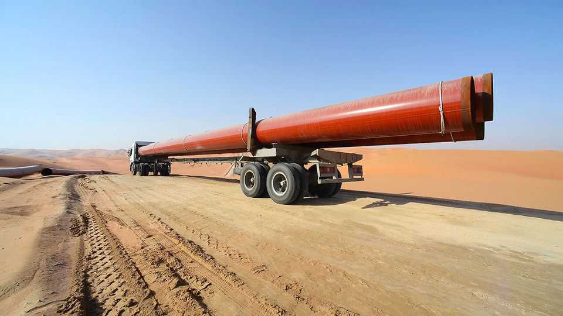

Gulf states should make a deal with Iran on Hormuz
How to make Iranian blackmail less painful

Aug 6th 2026
The gulf states are caught in a mess of Donald Trump’s making. After more than five months of war, the Strait of Hormuz is still mostly closed. A familiar pattern has emerged. When talks between America and Iran fail to yield progress, the two sides return to fighting; when bombs fail to break the deadlock, negotiations resume. In recent days Mr Trump has once again both talked up a deal on Hormuz and threatened to hit Iran “really hard”. He gave Iran “one last chance” to reopen the strait. Once again.
Iran, however, still insists on near-total control of the waterway. Its exasperated neighbours seem to hold out little hope that it will soften its stance—or be forced to do so. Even a new regime in Tehran, supposing one sprung up, may be unwilling to surrender its new prize.
Instead, Gulf countries are racing to make the Strait of Hormuz obsolete. Saudi Arabia and the United Arab Emirates are both building or expanding oil pipelines to bypass the strait; Iraq plans to divert its barrels north. American and Saudi investors are considering a giant refinery outside the strait. Such workarounds will help. But, as our “Hormuz dependency dashboard” shows, this quest for resilience unfortunately has its limits.
Pipeline projects are often delayed. Yet even if all the plans were completed on time, by 2030, 5m of the 15m barrels a day (b/d) that crossed Hormuz before the war would still have to pass through it. Besides, pipelines can be struck by Iran. Relying on them risks exposing Gulf suppliers to other choke points, not least the Bab al-Mandab strait in the Red Sea where the Houthis, Yemen’s Iran-allied rebels, are firing at ships. Like Iran, they have charged ships fees before and may do so again (though they deny this).
Don’t forget all the commodities besides crude oil. Without Hormuz, Qatar still cannot ship its liquefied natural gas—a fifth of the world’s supply. Gulf refineries remain largely cut off. And that is only on the export side, the part of the ledger that most concerns the outside world. From the point of view of the Gulf countries, many of their critical imports, from food to metals, cannot be sent cheaply overland.
Pipelines are worth building, but Gulf countries should also spend more on defending them, and hasten work on other alternatives. All these fixes will take time. For now, the Gulf states need their ships to traverse Hormuz unharmed. America’s bombs have not been able to accomplish this. One drone strike is enough to deter most ships, and jack up insurance premiums.
The only realistic way out is a deal, however unpalatable. Iran wants to manage the strait jointly with Oman, a more pragmatic government. Negotiating an agreement might give Gulf countries a chance to register their red lines and demands. Gulf countries might have no choice but to pay transit fees. Shipowners would probably tolerate them so long as they did not fall foul of sanctions. That means America needs to be on board.
Such a settlement would probably be fragile. International law says that maritime trade should be safe and free. A multilateral deal involving China, which has an interest in keeping the strait open and could restrain Iran, would be more durable. But that looks unlikely for now. Nor does Iran yet seem ready to accept a return to the status quo in the strait. Still, if a deal, however limited and unbalanced, lowers hostilities and buys Gulf countries time to build workarounds and defences that reduce Iran’s leverage, it will be worth having. Iran looks likely to win this battle. But it may yet lose the longer war. ■